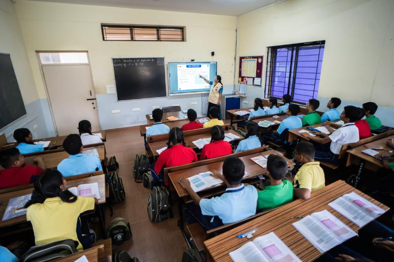
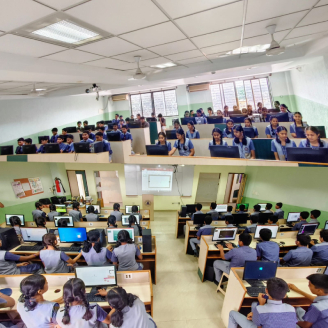
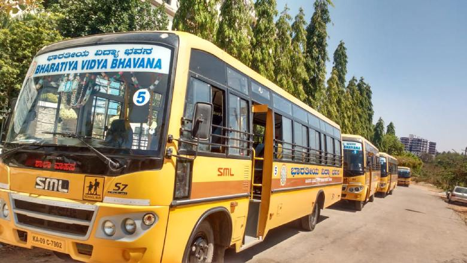
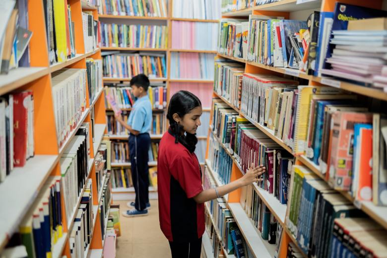
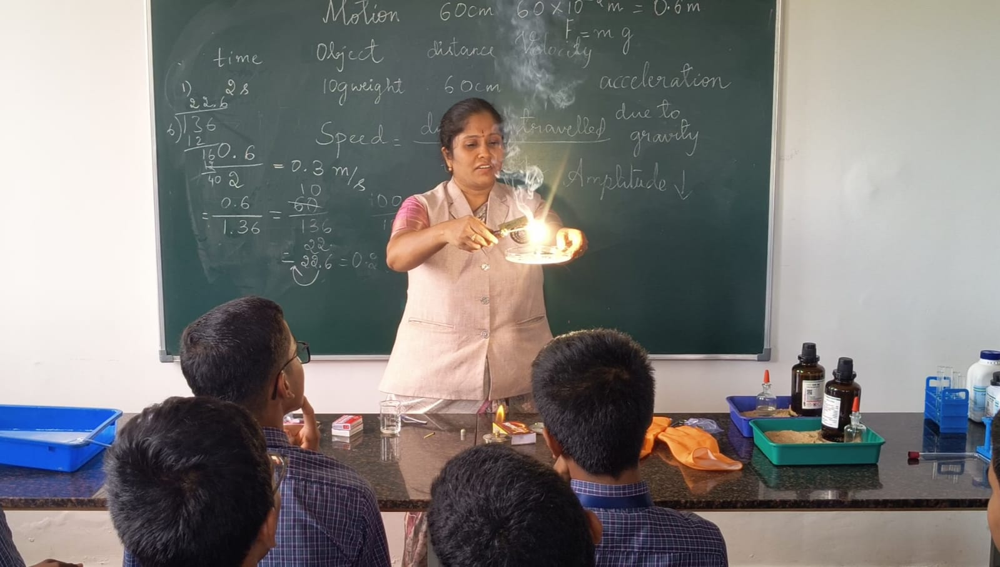

<div class="container pt-5">
  <div class="container-block">
    <div class="d-flex flex-wrap">
      <section id="digiboards" class="row align-items-center">
        <h5 class="page-title bottom-line">
          Digital & Smart Classroom Facility
        </h5>
        <div class="d-flex flex-column flex-md-row align-items-center">
          <div class="col-12 col-md-4">
            
          </div>
          <div class="text-content col-12 col-md-8">
            <p>
              Bharatiya Vidya Bhavan is equipped with digital smart boards in
              every classroom, from Pre-KG to Class 10. This modern
              infrastructure ensures that students benefit from interactive and
              engaging lessons across all grades.
            </p>
            <p>
              By combining traditional teaching methods with advanced digital
              resources, we aim to optimize classroom learning and prepare
              students for the demands of a technology-driven world.
            </p>
          </div>
        </div>
      </section>
      <section id="computerlab" class="row align-items-center">
        <h5 class="page-title bottom-line">Computer Laboratory Facility</h5>
        <div class="d-flex flex-column flex-md-row align-items-center">
          <div class="col-12 col-md-4">
            
          </div>
          <div class="text-content col-12 col-md-8">
            <p>
              Bharatiya Vidya Bhavan maintains a modern computer lab with 30
              systems, giving students individual access for hands-on learning.
              An exclusive computer syllabus ensures they stay aligned with
              evolving technology trends, combining theory with practical
              skills.
            </p>
            <p>
              Guided by trained faculty, the lab helps students build digital
              literacy, problem-solving abilities, and prepares them for a
              technology-driven future.
            </p>
          </div>
        </div>
      </section>
      <section id="transport" class="row align-items-center">
        <h5 class="page-title bottom-line">School Transportation Facility</h5>
        <div class="d-flex flex-column flex-md-row align-items-center">
          <div class="col-12 col-md-4">
            
          </div>
          <div class="text-content col-12 col-md-8">
            <p>
              Bharatiya Vidya Bhavan offers a reliable and well-organized school
              bus service for students across Mysuru. Our transportation network
              is designed to cover all major residential areas, ensuring safe
              and convenient travel to and from school.
            </p>
            <p>
              Parents who wish to avail this facility can opt in during the
              admission process or at the start of the academic year. Each bus
              is supervised by trained staff and adheres to strict safety
              protocols, providing peace of mind for families and a comfortable
              commute for students.
            </p>
          </div>
        </div>
      </section>
      <section id="library" class="row align-items-center">
        <h5 class="page-title bottom-line">Library</h5>
        <div class="d-flex flex-column flex-md-row align-items-center">
          <div class="col-12 col-md-4">
            
          </div>
          <div class="text-content col-12 col-md-8">
            <p>
              Bharatiya Vidya Bhavan offers a well‑stocked library with over
              3,000 books, providing students access to a wide range of
              educational resources. The collection includes textbooks,
              reference materials, magazines, and general reading to support
              both academic learning and personal growth.
            </p>
            <p>
              The library features comfortable seating arrangements, creating a
              quiet and welcoming space where students can read, research, and
              explore knowledge beyond the classroom.
            </p>
          </div>
        </div>
      </section>

      <section id="science-lab" class="row align-items-center">
        <h5 class="page-title bottom-line">Science Lab</h5>
        <div class="d-flex flex-column flex-md-row align-items-center">
          <div class="col-12 col-md-4">
            
          </div>
          <p class="text-content col-12 col-md-8">
            Science is a universal subject that examines the structure and
            behaviour of the physical and natural world through observation and
            experiment. The Science lab at Bharatiya Vidya Bhavan aids a student
            in establishing the relevance of the theory. It brings clarity on
            the basic concept of the subject. Learning about the scientific
            method teaches children how to ask questions and gather the evidence
            needed for the most complete answer.
          </p>
        </div>
      </section>

      <section id="cctvclassroom" class="row align-items-center">
        <h5 class="page-title bottom-line">Campus Surveillance and Safety</h5>
        <div
          class="d-flex flex-column flex-md-row align-items-center text-content"
        >
          <div>
            <p>
              At Bharatiya Vidya Bhavan, the safety and well-being of our
              students and staff are of utmost importance. To ensure a secure
              learning environment, all 38 classrooms are equipped with CCTV
              cameras, providing continuous monitoring throughout the school
              day. In addition to classrooms, key areas such as corridors, entry
              and exit points, playgrounds, and administrative zones are also
              under surveillance.
            </p>
            <p>
              This comprehensive security system helps deter misconduct,
              supports emergency response, and fosters a sense of accountability
              across the campus. By integrating technology into our safety
              protocols, we aim to create a protected space where students can
              focus on learning and personal growth with peace of mind.
            </p>
          </div>
        </div>
      </section>
    </div>
  </div>
</div>
